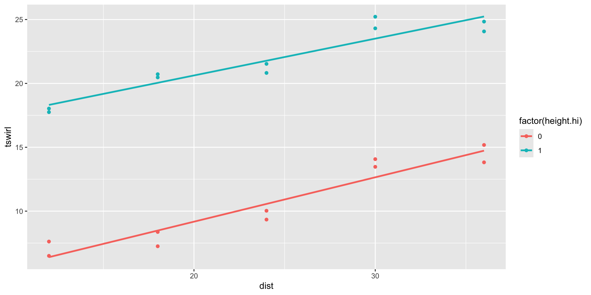

Chapter 3: Multiple Regression
Part 2: Section 3.3
Statistical Modeling
MATH 360
Outline
“Dummy variable” predictors
As a single predictor
With a quantitative predictor
Comparing two lines
Different intercepts
Different lines
Extend to more than two lines
Funnel Data:
Height as a Categorical Predictor
Use height \((x)\) to predict swirling time \((y)\)
Compare high (13 inches) vs low (10 inches)
Two-Sample \(t\) Test for Means (using pooled variances)
- Test for equal swirling times:
\[ \begin{gather} H_0:\mu_1=\mu_2\\ H_a:\mu_1\neq\mu_2 \end{gather} \]
- Use pooled \(t\)-test: \[t=\frac{\bar y_1-\bar y_2}{s_p\sqrt{\frac 1n_1 + \frac 1n_2}}\]
- Assume constant variability \((\sigma_1=\sigma_2)\) and use the pooled standard deviation: \[ s_p=\sqrt{\frac{(n_1-1)s_1^2+(n_2-1)s_2^2}{n_1+n_2-2}}\quad . \]
Two-sample \(t\)-test in R
Two Sample t-test
data: tswirl by height.hi
t = -8.3465, df = 18, p-value = 1.333e-07
alternative hypothesis: true difference in means between group 0 and group 1 is not equal to 0
95 percent confidence interval:
-14.032968 -8.389032
sample estimates:
mean in group 0 mean in group 1
10.565 21.776 Recast this as a dummy variable regression question
- Regression model:
\[ \text{tswirl} = \beta_0 + \beta_1 X + \epsilon \] where \[X=\begin{cases} 0 & \text{height } =10 \\1 & \text{height } =13 \end{cases}\]
- We call \(X\) an indicator or dummy variable.

But this is just the
2-means model!
Dummy variable regression code and output
Call:
lm(formula = tswirl ~ height.hi, data = funnel.hilo)
Residuals:
Min 1Q Median 3Q Max
-4.0650 -2.3825 -0.7455 2.9448 4.6150
Coefficients:
Estimate Std. Error t value Pr(>|t|)
(Intercept) 10.5650 0.9498 11.124 1.69e-09 ***
height.hi 11.2110 1.3432 8.346 1.33e-07 ***
---
Signif. codes: 0 '***' 0.001 '**' 0.01 '*' 0.05 '.' 0.1 ' ' 1
Residual standard error: 3.003 on 18 degrees of freedom
Multiple R-squared: 0.7947, Adjusted R-squared: 0.7833
F-statistic: 69.66 on 1 and 18 DF, p-value: 1.333e-07Comparing the t-test and regression output?
Compare \(t\) statistics and p-values.
Interpret regression intercept.
Interpret regression slope.
Where does \(s_p\) appear in the output?
One and Two Means Model in the Regression Setup
- Two-means model: \(Y=\beta_0+\beta_1 X_1 +\epsilon\)
- \(\mu_1 = \beta_0\)
- \(\mu_2 = \beta_0+\beta_1\)
- One-mean model: \(\beta_1=0\) \(\iff\) \(\mu = \beta_0\)
- \(\mu_1=\mu_2 = \beta_0\)
Quantitative plus indicator predictors
Parallel lines model
Example:
\(Y\) = swirling time
\(X_1\) = distance up the channel
\(X_2\) = height (low = 0, high = 1)
Overall model
- \(Y=\beta_0+\beta_1 X_1+\beta_2 X_2 +\epsilon\)
- Identify models for each height
low: \(X_2 = 0\) so \[\begin{align}Y=& \beta_0 + \beta_1 X_1+ \beta_2\cdot 0 + \epsilon \\[1ex] =&\beta_0 + \beta_1 X_1+ \epsilon\end{align}\]
high: \(X_2 = 1\) so \[\begin{align}Y=&\beta_0 + \beta_1 X_1 + \beta_2\cdot 1 + \epsilon\\[1ex] =& (\beta_0+\beta_2) + \beta_1 X_1 + \epsilon\end{align}\]
Funnel Data Example: Parallel Lines Regression
Call:
lm(formula = tswirl ~ dist + height.hi, data = funnel.hilo)
Residuals:
Min 1Q Median 3Q Max
-1.5200 -0.6068 -0.2290 0.8135 1.5980
Coefficients:
Estimate Std. Error t value Pr(>|t|)
(Intercept) 2.93700 0.70527 4.164 0.00065 ***
dist 0.31783 0.02628 12.092 8.95e-10 ***
height.hi 11.21100 0.44605 25.134 6.95e-15 ***
---
Signif. codes: 0 '***' 0.001 '**' 0.01 '*' 0.05 '.' 0.1 ' ' 1
Residual standard error: 0.9974 on 17 degrees of freedom
Multiple R-squared: 0.9786, Adjusted R-squared: 0.9761
F-statistic: 389 on 2 and 17 DF, p-value: 6.398e-15Specify Fitted Models by Height
- Height = Low \((X_2=0)\):
\[ \widehat{\text{tswirl}} = 2.937 + 0.318 \cdot \text{dist} \]
- Height = High \((X_2=1)\):
\[ \begin{align} \widehat{\text{tswirl}} =& 2.937 + 0.318 \cdot \text{dist} + 11.211(1)\\[1ex] =& 14.148 + 0.318 \cdot \text{dist} \end{align} \]
Plotting the fitted parallel lines

Comparing Parallel Regression Lines
Is there a significant difference in the intercepts?
The \(t\)-test for the
height.hi(dummy variable) coefficient is a test of whether the intercepts differ:
\[ \begin{gather} H_0: \beta_2=0\\ H_a: \beta_2\neq 0 \end{gather} \]
Assessing the Fit

Interaction (Two Lines) Model
Allow both intercepts and slopes to differ
The two lines model:
\[ Y = \beta_0 + \beta_1 X_1 + \beta_2 X_2 + \beta_3 X_1\cdot X_2 + \epsilon \]
\(\beta_2\) models the difference in intercepts.
\(\beta_3\) models the difference in slopes.
Interaction (Two Lines) Model for Funnel Data
The complete model
\[ \text{tswirl} = \beta_0 + \beta_1 (\text{dist}) + \beta_2 (\text{funnel.hi}) + \beta_3 (\text{dist}\cdot \text{funnel.hi}) + \epsilon \]
Specifying the model for each height:
- Height = Low
\[ \begin{align} \text{tswirl} &= \beta_0 + \beta_1 (\text{dist}) + \beta_2 (0) + \beta_3 (\text{dist}\cdot 0) + \epsilon \\[1ex] &= \beta_0 + \beta_1 (\text{dist}) + \epsilon \end{align} \]
- Height = High
\[ \begin{align} \text{tswirl} &= \beta_0 + \beta_1 (\text{dist}) + \beta_2 (1) + \beta_3 (\text{dist}\cdot 1) + \epsilon \\[1ex] &= (\beta_0+\beta_2) + (\beta_1+\beta_3) (\text{dist}) + \epsilon \end{align} \]
R Output for the Interaction Model
Call:
lm(formula = tswirl ~ dist + height.hi + dist * height.hi, data = funnel.hilo)
Residuals:
Min 1Q Median 3Q Max
-1.2310 -0.6528 -0.1785 0.7065 1.7140
Coefficients:
Estimate Std. Error t value Pr(>|t|)
(Intercept) 2.22900 0.93851 2.375 0.0304 *
dist 0.34733 0.03687 9.421 6.26e-08 ***
height.hi 12.62700 1.32726 9.514 5.47e-08 ***
dist:height.hi -0.05900 0.05214 -1.132 0.2745
---
Signif. codes: 0 '***' 0.001 '**' 0.01 '*' 0.05 '.' 0.1 ' ' 1
Residual standard error: 0.9893 on 16 degrees of freedom
Multiple R-squared: 0.9802, Adjusted R-squared: 0.9765
F-statistic: 264 on 3 and 16 DF, p-value: 7.819e-14Using the R Output for the Interaction Model
Use coefficient \(t\)-tests
Test for different slopes:
- \(H_0: \beta_3=0\text{ versus } H_a: \beta_3\neq 0\)
Test for different intercepts:
- \(H_0: \beta_3=0\text{ versus } H_a: \beta_3\neq 0\)
Note: Joint test for both requires a nested \(F\)-test (to come)
The Two Lines Models Can Be Generalized to More than Two Heights:
Three parallel lines
Three parallel lines output:
Call:
lm(formula = tswirl ~ dist + factor(height), data = funneldata)
Residuals:
Min 1Q Median 3Q Max
-1.5800 -0.6760 -0.1425 0.8460 1.5680
Coefficients:
Estimate Std. Error t value Pr(>|t|)
(Intercept) 2.81700 0.58404 4.823 5.36e-05 ***
dist 0.32283 0.02075 15.556 1.10e-14 ***
factor(height)11.5 8.50400 0.43134 19.715 < 2e-16 ***
factor(height)13 11.21100 0.43134 25.991 < 2e-16 ***
---
Signif. codes: 0 '***' 0.001 '**' 0.01 '*' 0.05 '.' 0.1 ' ' 1
Residual standard error: 0.9645 on 26 degrees of freedom
Multiple R-squared: 0.9741, Adjusted R-squared: 0.9711
F-statistic: 325.9 on 3 and 26 DF, p-value: < 2.2e-16Three general lines
Three general lines output:lm.3lines <- lm(tswirl ~ dist + factor(height) + dist:factor(height),
data = funneldata)
summary(lm.3lines)
Call:
lm(formula = tswirl ~ dist + factor(height) + dist:factor(height),
data = funneldata)
Residuals:
Min 1Q Median 3Q Max
-1.3850 -0.6560 -0.1785 0.7715 1.7140
Coefficients:
Estimate Std. Error t value Pr(>|t|)
(Intercept) 2.22900 0.92519 2.409 0.024 *
dist 0.34733 0.03635 9.557 1.18e-09 ***
factor(height)11.5 8.85200 1.30842 6.765 5.36e-07 ***
factor(height)13 12.62700 1.30842 9.651 9.80e-10 ***
dist:factor(height)11.5 -0.01450 0.05140 -0.282 0.780
dist:factor(height)13 -0.05900 0.05140 -1.148 0.262
---
Signif. codes: 0 '***' 0.001 '**' 0.01 '*' 0.05 '.' 0.1 ' ' 1
Residual standard error: 0.9752 on 24 degrees of freedom
Multiple R-squared: 0.9756, Adjusted R-squared: 0.9705
F-statistic: 191.6 on 5 and 24 DF, p-value: < 2.2e-16